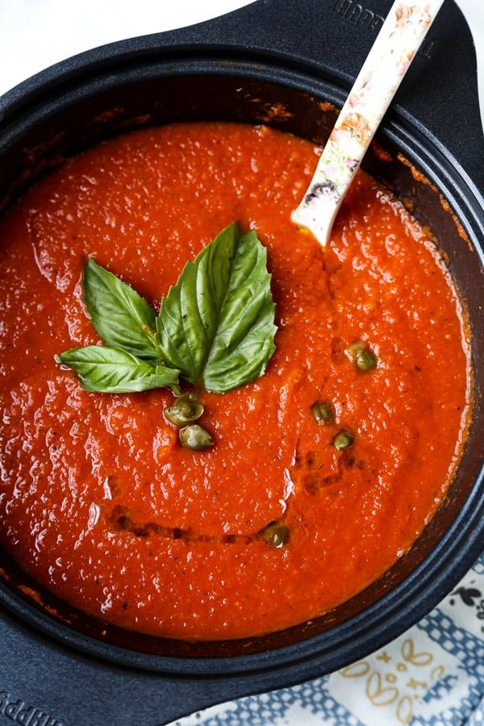

Every Day Sauce

Everday Sauce
You can put this on anything
This was the first thing that my Grandpa tought me how to cook
Ingrediants
- San Marzano Tomatoes
- Olive Oil
- 4-5 Cloves of Garlic
- Fresh Basil
- Salt
- Pepper
Preparation
- This sauce can either take 15 minutes to make or 45 minutes, either way it is a good alternative to store bought sauces and will keep just as long in freezer.
- To start open a can of whole peeled San Marzano Tomatoes and empty them in into a large bowl. The best way to break up the tomatoes will be to use your hands. Just make sure you wash them.
- Next thinly slice 4-5 cloves of garlic. You can also use a garlic press but if you want to see the garlic chunks in the sauce it is better to slice them.
- In a large pot, coat the entire bottom of the pot with Olive oil over medium heat. Add your chopped garlic and fresh basil. The olive oil will keep the garlic from burning and allow you to release its flavor.
- After about 5-8 minutes or until the garlic has become fragrant, dump your tomatoes into the pot and bring it to a simmer. Try to avoid bringing it to a boil because it may burn the sauce.
- Add salt and pepper for taste, however much you like.
- The longer you let the sauce simmer (covered or unconvered) the more flavor that will be released.
- This sauce is very versatile and can used pretty much on everything. Just let it cool down before you store the leftovers.